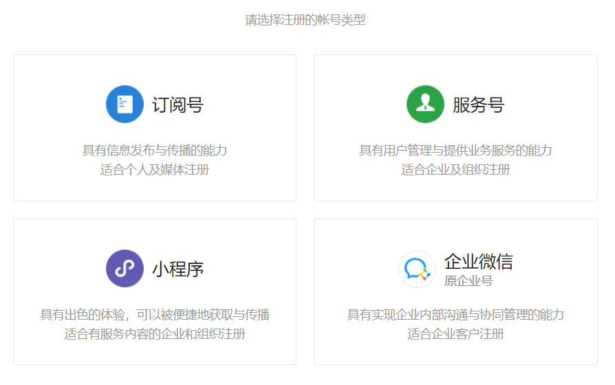
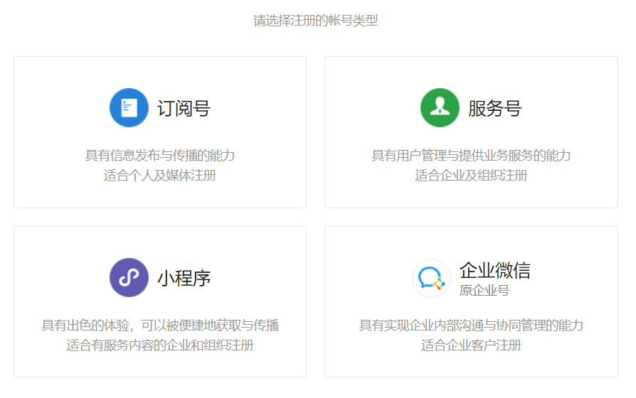
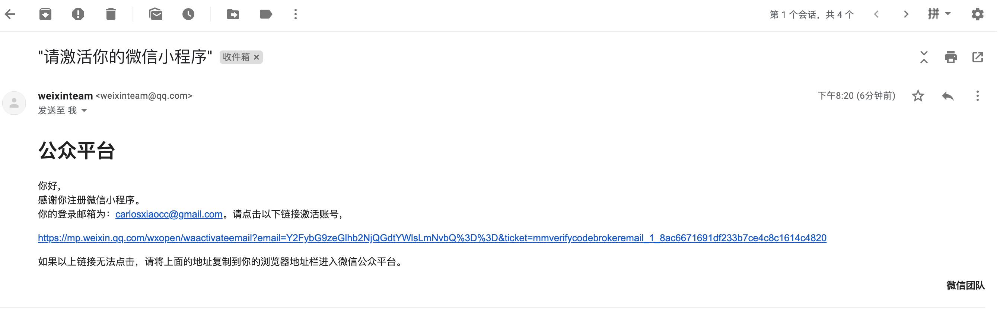
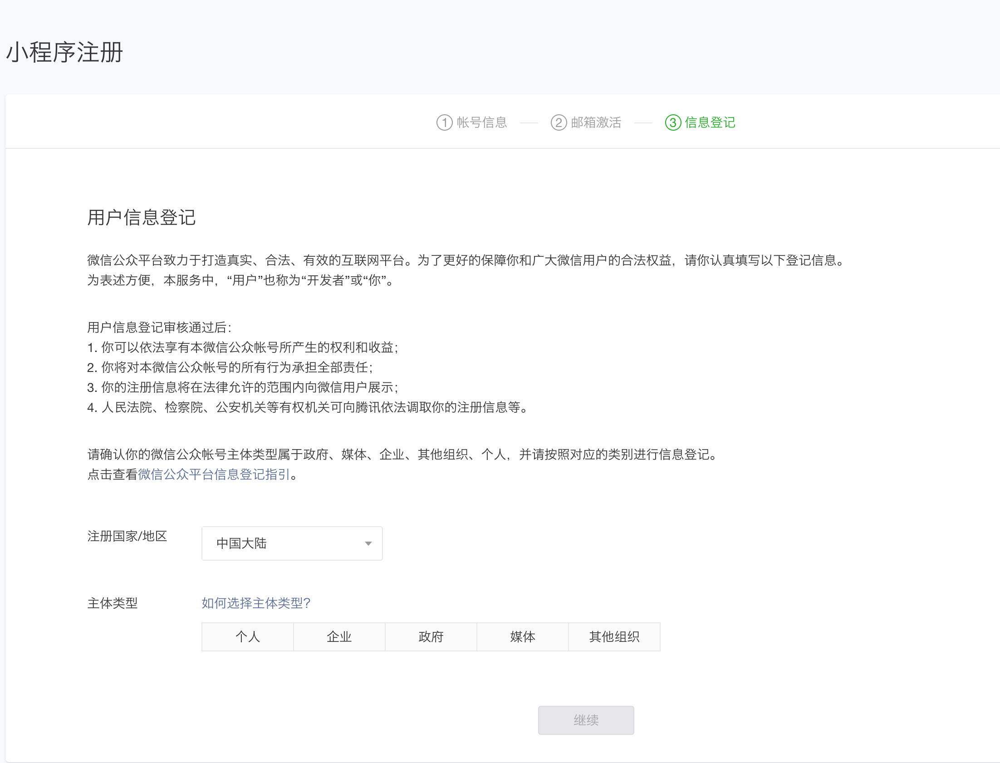
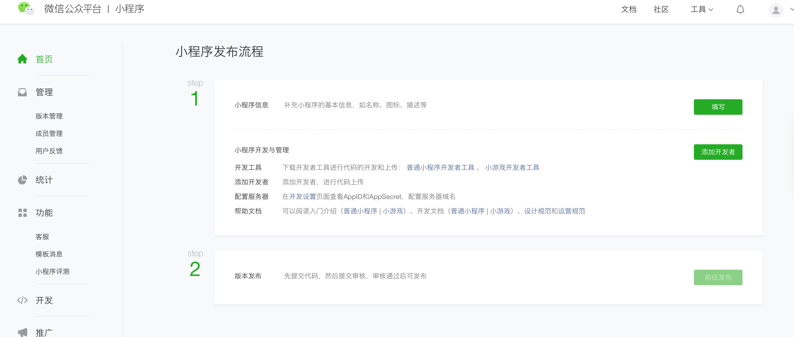
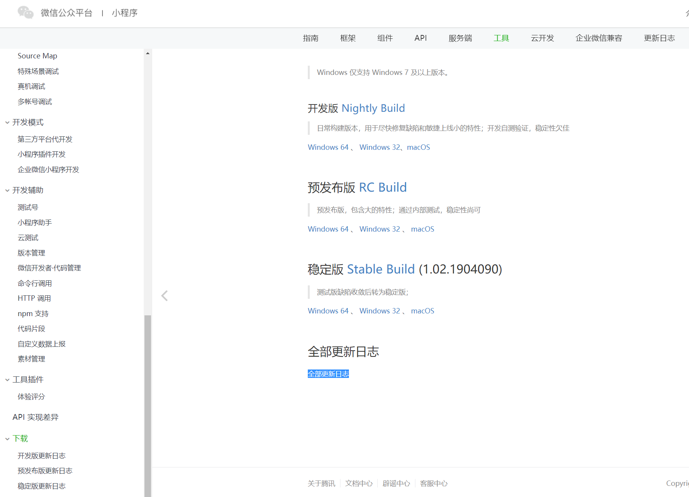

注册小程序账号
进入微信公众平台, 点击立即注册；然后选择小程序账号申请  邮箱注意事项：邮箱不能是微信公众平台，开发平台注册过的邮箱，也不能是个人微信号绑定的邮箱
进入微信公众平台, 点击立即注册；然后选择小程序账号申请

邮箱注意事项：邮箱不能是微信公众平台，开发平台注册过的邮箱，也不能是个人微信号绑定的邮箱
激活邮箱
进入邮箱激活

信息登记
主体类型选择个人。

登录小程序管理后台

完善小程序信息
微信开发工具
